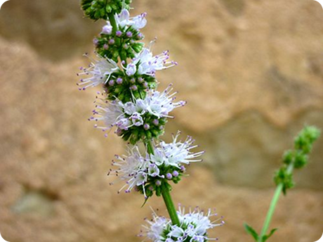
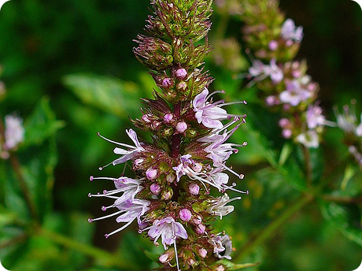
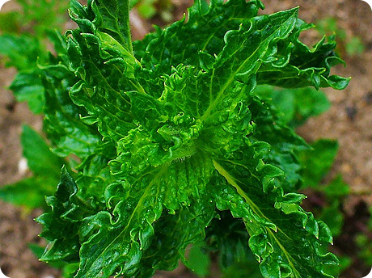

Hortelã
.png) A hortelã-verde ou menta (Mentha spicata), também conhecida como hortelã-de-leite, hortelã-das-cozinhas, hortelã-dos-temperos, hortelã-vulgar, hortelã-das-hortas, hortelã-comum, levante, alevante, elevante ou simplesmente hortelã, é uma planta herbácea perene, da família Lamiaceae (Labiadas). Existem inúmeras variedades cultivadas.
A hortelã-verde ou menta (Mentha spicata), também conhecida como hortelã-de-leite, hortelã-das-cozinhas, hortelã-dos-temperos, hortelã-vulgar, hortelã-das-hortas, hortelã-comum, levante, alevante, elevante ou simplesmente hortelã, é uma planta herbácea perene, da família Lamiaceae (Labiadas). Existem inúmeras variedades cultivadas.
É uma planta originária da Ásia, mas é muito cultivada em todo o mundo, devido às essências aromáticas presentes em toda a planta, principalmente nas folhas. Tolera bem diferentes condições climáticas, desde que não falte água. Em climas frios pode perder as partes aéreas no Inverno, sobrevivendo através dos seus rizomas, que só morrem se o solo congelar completamente.
É utilizada como tempero em culinária, como aromatizante em certos produtos alimentares, ou para a extração do seu óleo essencial.
Dados
Mentha spicata
18
Herbácea perene
08/08/2018
Lamiales
Universidade Federal do Rio de Janeiro
Lamiaceae
Siman Eugster
Não informado.
Cultivada também para fins ornamentais. É uma das plantas mais usadas do mundo.
Glossário
Herbacea perene:
Plantas de caule flexível e de coloração verde bem forte. Possuem um ciclo de vida longo, chegando a viver entre dois e três anos. Normalmente são encontradas em tamanhos compactos. Além disso, essas plantas contam com floração contínua, ou seja, não há intervalo entre um período de floração e outro.
Galeria


